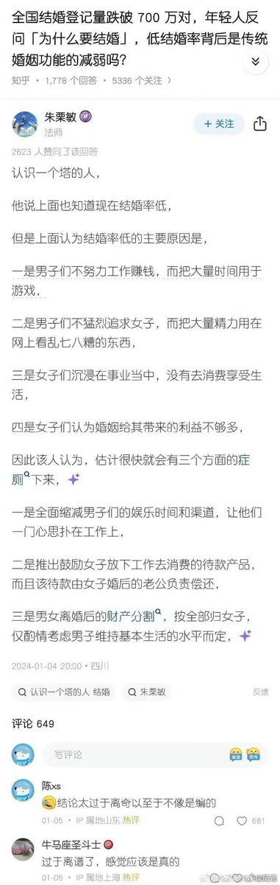

拱北靠北
@psyofsouthwest
@LIGHTSEEKER1984 也不研究研究绿绿们 黑黑们和牢东时期是怎么能够人口爆发增长的

The Gulag Bot
@LIGHTSEEKER1984
这是知乎在24年，对墙国未来的利女政策的预测，一语成谶
体制内的老爷和女权，还觉得不够惠女🤡
胖猫事件，大同订婚案，成都地铁诬告案，武大诬告案
尤其是25年，众多女性丑闻，都被轻拿轻放
最近最高法和最高检公布的案例，公布的司法解释，还有强奸案和财产分割，抚养权抚养费上，都是极端偏袒女人 https://t.co/STZxMT7ghh https://t.co/giN12MGgAg